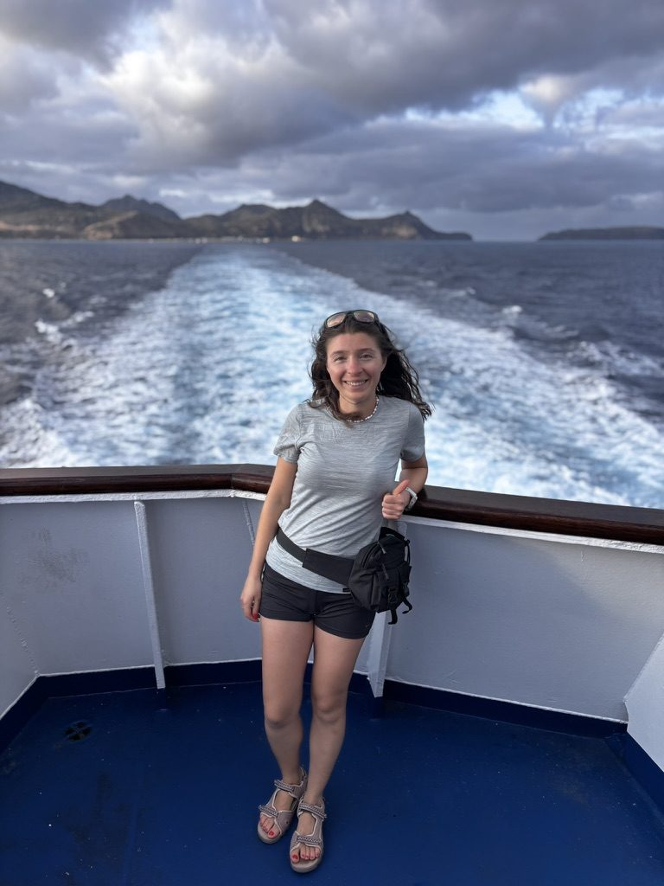
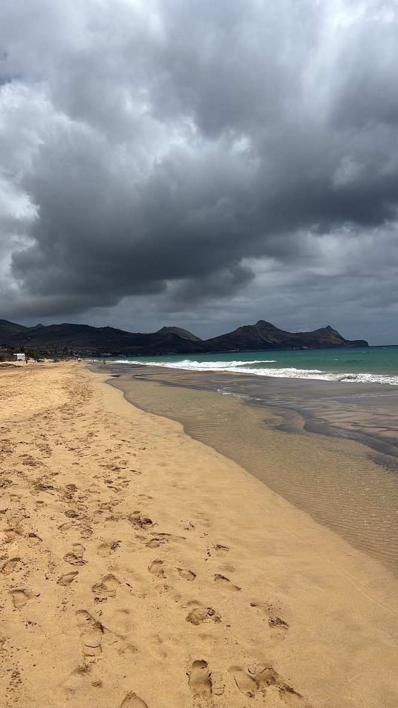
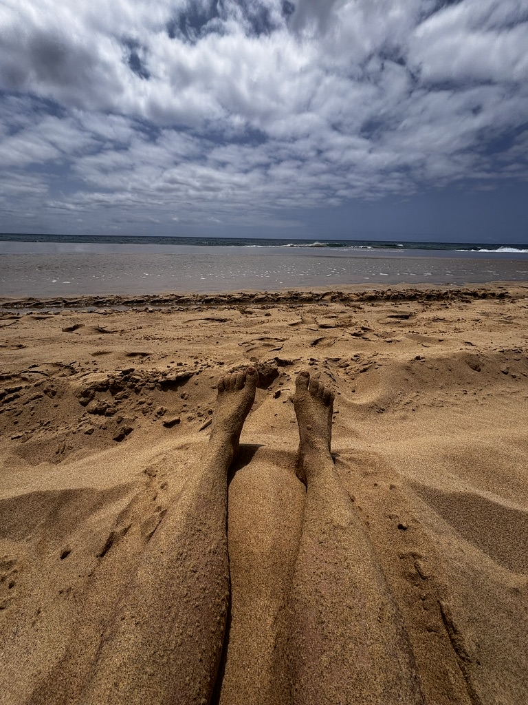
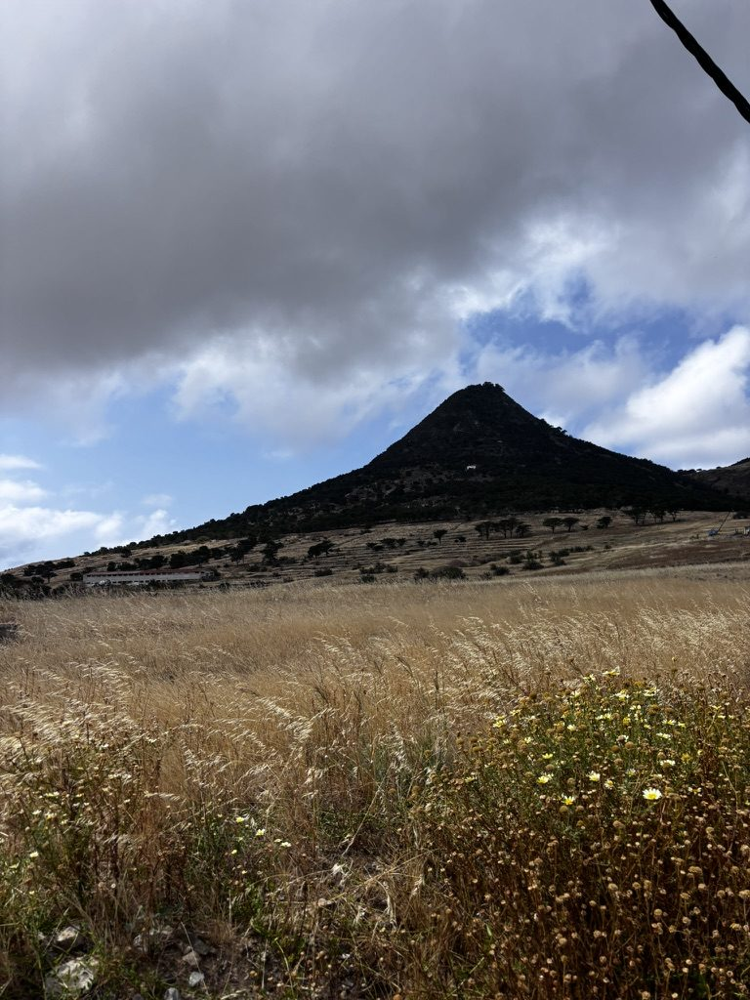
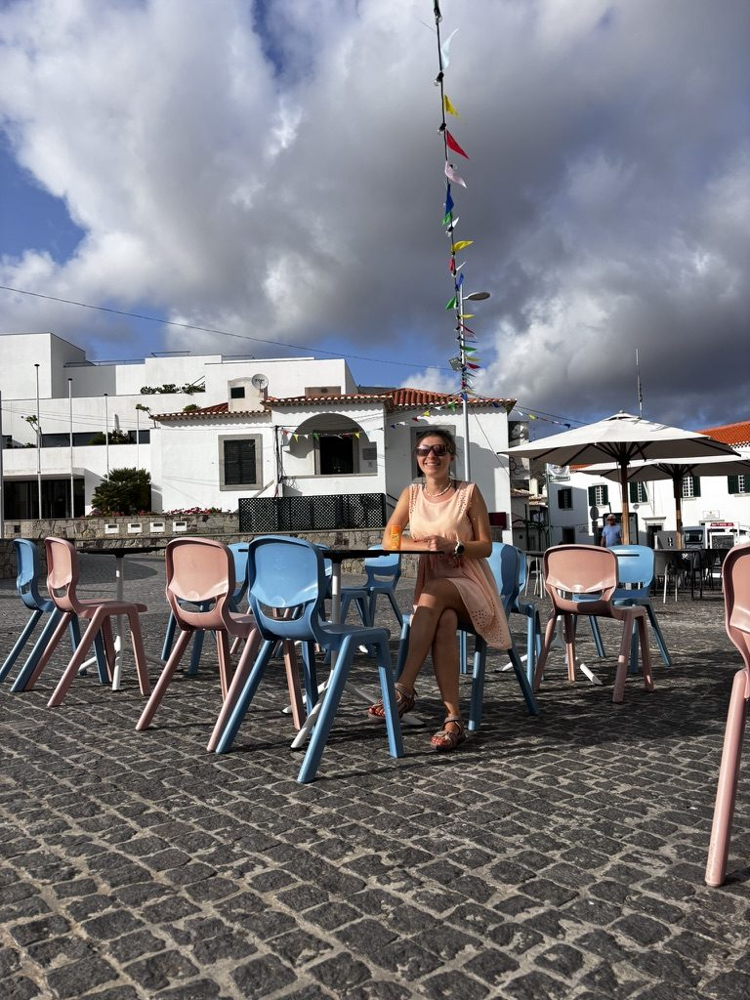
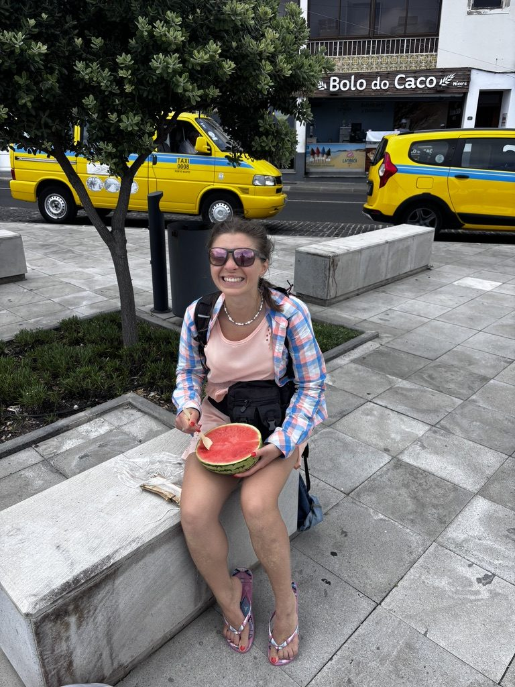
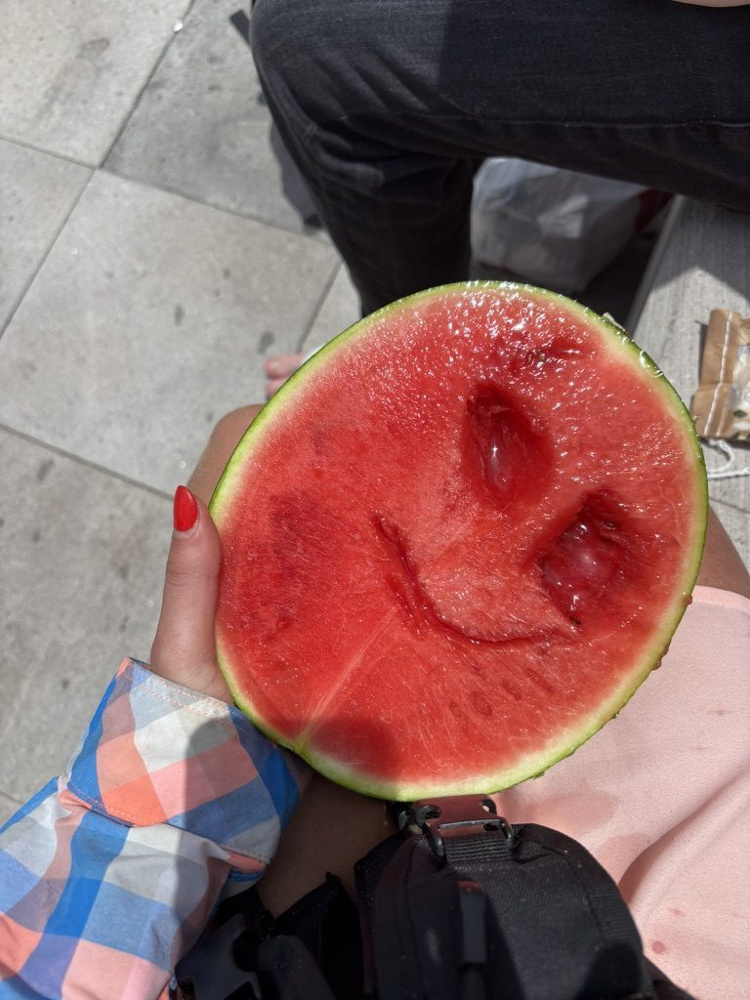
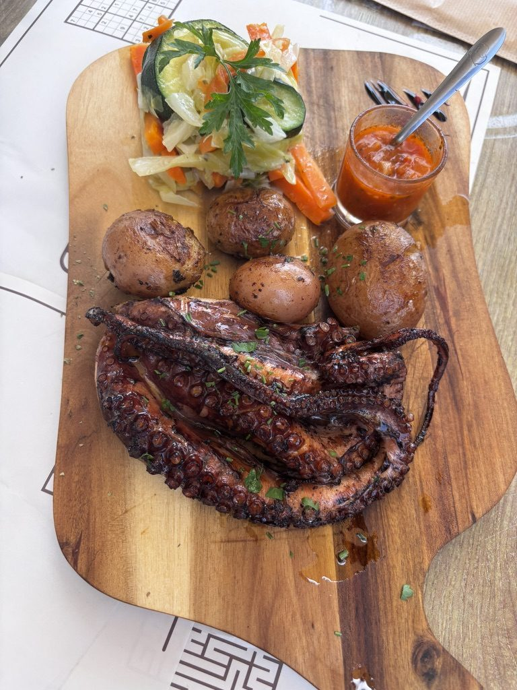
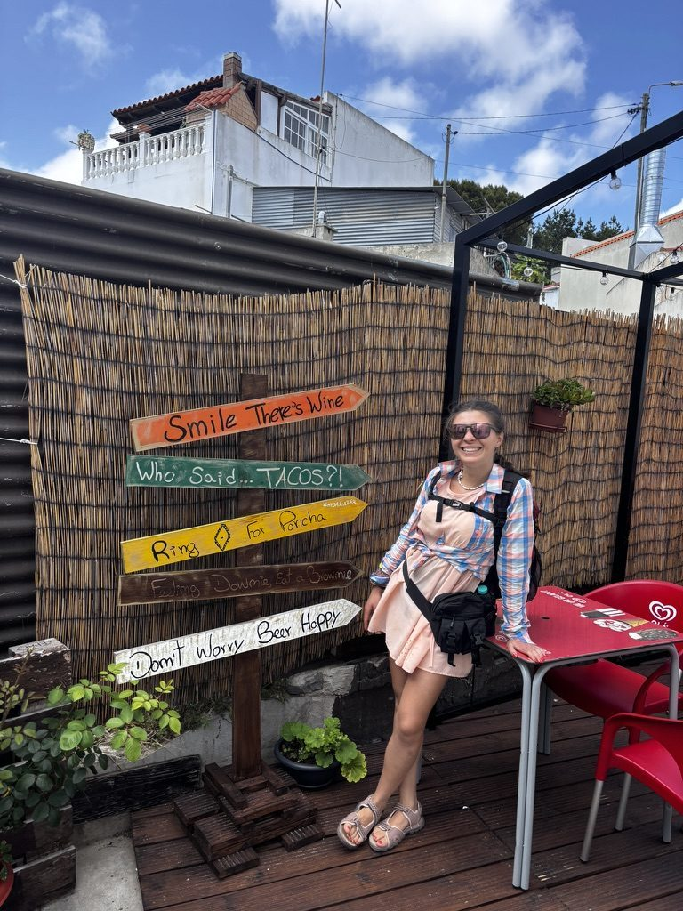
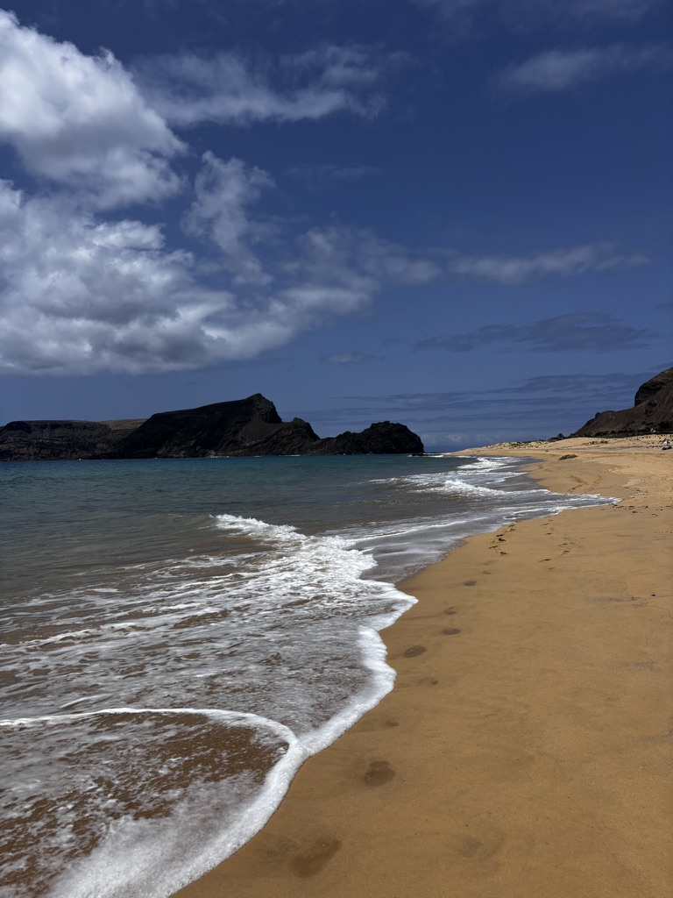

Porto Santo is Madeira's smaller neighbour — 45 kilometres north, reachable by a two-hour ferry or a 25-minute flight. Where Madeira is vertical, dramatic, wet, and green, Porto Santo is flat, arid, golden, and has a nine-kilometre beach of pale sand that runs the entire length of the island's south coast. They are entirely different places that happen to belong to the same archipelago.
I went for one day with a friend from the cowork in Funchal. We caught the morning ferry, got back on the afternoon one, and used the hours in between as efficiently as a day trip allows.
The ferry out

Madeira getting smaller. The Atlantic doing its thing.
The ferry from Funchal takes about two hours and crosses open Atlantic. On a calm day it's pleasant. It is not always a calm day. We stood on the rear deck watching Madeira's mountains get smaller and arrive at Porto Santo with salt in our hair and the particular energy that comes from standing on a moving boat in the wind for two hours.
The long beach

The nine-kilometre beach. Storm building on the horizon. Perfect.

A smaller bay at the eastern end. The water was this colour because it actually is this colour.

The sand is therapeutic, apparently. It has minerals. I can confirm it is warm and good to bury your feet in.
The Porto Santo beach is famous for its therapeutic properties — the sand is high in minerals, particularly magnesium, and people come specifically to be buried in it or simply to walk on it. I buried my feet. Whether it cured anything I cannot confirm. What I can confirm is that nine kilometres of beach with almost no one on it, Atlantic waves on one side and a volcanic island landscape on the other, is one of the more peaceful places I have sat in recent memory.
The volcano peak, the village, and the watermelon

The volcanic peak above the wheat fields. Porto Santo is dry in a way Madeira never is.

The village square. I had this corner to myself for a while.

Watermelon from the market. Eaten outside, with a spoon. No regrets.

Make everything more fun with a smiley face!
We explored the village — small, whitewashed, quiet. The kind of place that has a square with a café and not much else and is completely fine with that. We found a market and bought half a watermelon and ate it on the street. It had a naturally occurring smiley face in the flesh. This seemed meaningful enough to photograph before eating.
The octopus

Grilled octopus with bolo do caco potatoes and mojo sauce. Porto Santo does this very well.
We had lunch at a restaurant near the beach. The menu had grilled octopus — a whole one, on a wooden board, with the small roasted potatoes they do in Madeira and a red mojo sauce. Porto Santo does seafood with the kind of confidence that comes from being in the middle of the Atlantic. The octopus was the best I had in the archipelago.
The view from above

The viewpoint above town. The airport runway visible below. The whole island in one look.
In the afternoon we climbed to the viewpoint above the town. From up there you can see the whole island at once — the beach curving along the south, the town, the airport runway, the volcanic peaks to the east. Porto Santo is small enough to hold in a single view. There's something satisfying about that.
The ferry back, the sunset, the airport

The sun going down on the return ferry. Porto Santo already gone behind us.
The afternoon ferry back gave us this. The Atlantic at dusk, the last piece of sun on the horizon, storm clouds doing something operatic above. We stood at the stern watching it for a long time without saying much.
Back in Funchal, I had an early morning flight the next day — early enough that going home to sleep and coming back felt inefficient. I decided to sleep at the airport.
Airport floor, bags as pillow, full-time nomad lifestyle in action.
There is a specific kind of contentment that comes from lying on an airport seat with your bag as a pillow, knowing you're heading somewhere new, and not minding any of it at all. That was the feeling. I had been in Madeira for two months. Something was ending and something else was beginning. The floor was not comfortable. I was happy.
Before boarding, there was a sunset from the airport windows — the kind the Atlantic does when it decides to make an impression. The sky went orange and pink and then deep red over the water, and everyone near the windows stopped looking at their phones for a few minutes.
That was the end of Madeira. A sunset from an airport gate, a boarding call, and the next thing.